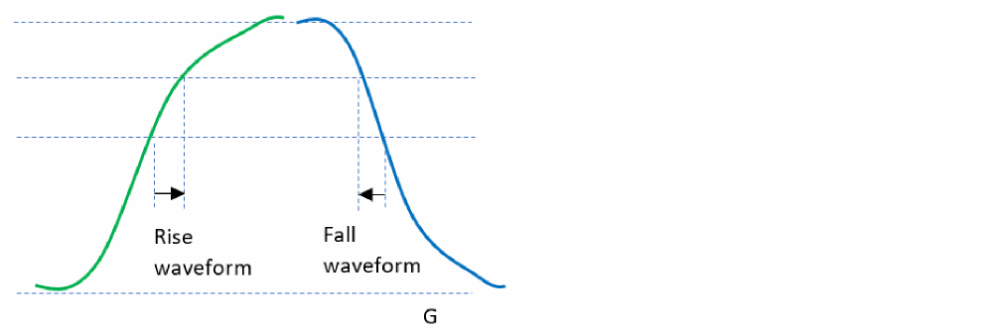

Waveform Aware Pulse Width Checks - An Overview
Traditional pulse width checks only check the pulse widths at delay measurement thresholds and therefore do not provide any information on the waveform shape. To control waveform shape degradation on clock networks, the Tempus software provides waveform aware pulse width checks to report minimum pulse width violations on user-specified voltage levels, and not just delay measurement thresholds. These checks can be applied on clock network pins.

Use Model
You can use the following attributes to specify voltage levels for waveform aware pulse width checks:
- timing_waveform_aware_pulse_width_checks_high_voltage_level
- timing_waveform_aware_pulse_width_checks_high_voltage_level
set timing_waveform_aware_pulse_width_checks_high_voltage_level 0.75
set timing_waveform_aware_pulse_width_checks_low_voltage_level 0.25
You can use the following command to specify the required pulse width at a user-defined voltage level:
set_min_pulse_width -waveform_aware_type {absolute | source_width_ratio}
set_min_pulse_width 0.1 [get_clocks clk1] -waveform_aware_type absolute
To reset these settings, you can use the reset_min_pulse_width command.
Return to top